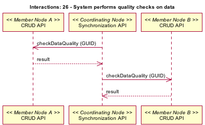

Use Case 26 - Data Quality Checks
- Author
- VDC TWG
- Date
- 20090925 Adding to use case description and documentation
- 20090114 (TWG meeting). Subsequent various modifications.
- Version
- Draft
- Goal
- System performs data quality checks on data.
Summary
xxx

- Actors
- xxx
- Preconditions
- xxx
- Triggers
- xxx
- Post Conditions
- xxx
Notes
- Is this more for verifying the quality of metadata? Otherwise how does it
differ from #25?